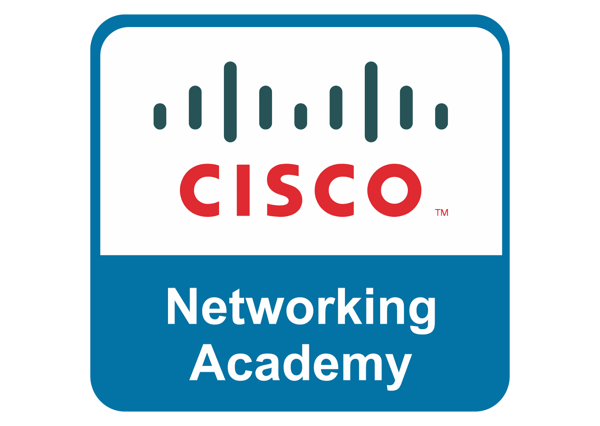
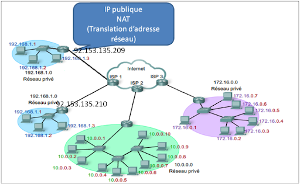

Certifications
Cette page regroupe les certifications obtenues au cours de ma formation et de mes expériences professionnelles. Elle met en avant les compétences validées ainsi que les domaines techniques que je développe au fil de mon parcours.
Les certifications constituent pour moi un moyen concret de démontrer mes connaissances, ma capacité à utiliser des solutions professionnelles et mon implication dans une montée en compétence continue.
RGPD de la CNIL
Cette certification m'a permis de renforcer mes connaissances sur le Règlement Général sur la Protection des Données et sur les bonnes pratiques à appliquer dans la gestion des données personnelles.
- Compréhension des principes fondamentaux du RGPD
- Identification des responsabilités liées au traitement des données
- Découverte des droits des utilisateurs et des obligations des organismes
- Sensibilisation à la conformité et à la protection de la vie privée
Cette certification constitue une base importante pour travailler dans un environnement informatique respectueux de la sécurité et de la confidentialité.

MOOC de l'ANSSI
Le MOOC de l'ANSSI m'a permis d'acquérir une vision claire des enjeux de cybersécurité et des réflexes essentiels à adopter dans un contexte personnel comme professionnel.
- Compréhension des principales menaces numériques
- Adoption des bonnes pratiques de sécurisation des usages
- Sensibilisation à l'authentification, aux mots de passe et aux sauvegardes
- Renforcement de ma culture générale en cybersécurité
Cette formation a consolidé mes bases en sécurité informatique et complète naturellement mon parcours en BTS SIO.
PIX
La certification PIX valide des compétences numériques transversales utiles dans les usages professionnels du quotidien. Elle couvre des domaines variés liés à l'environnement numérique, à la sécurité et à la collaboration.
- Utilisation efficace des outils numériques
- Maîtrise des usages collaboratifs et du partage d'information
- Sensibilisation à la sécurité des comptes et des données
- Développement d'une autonomie numérique globale
PIX met en valeur une base de compétences numériques complémentaires à mes apprentissages techniques en réseau et en administration système.
CISCO : Adressage réseau et dépannage de base
Cette certification Cisco m'a permis d'approfondir les notions essentielles liées à l'adressage IP ainsi qu'aux premières méthodes de diagnostic sur une infrastructure réseau.
- Compréhension de l'adressage IPv4 et de sa structure
- Identification des paramètres réseau d'un équipement
- Analyse de problèmes de connectivité simples
- Application d'une démarche méthodique de dépannage de base
Cette certification complète directement les compétences travaillées en BTS SIO autour de la configuration et de l'analyse réseau.


CISCO : Les bases du matériel informatique
Cette certification est centrée sur les composants matériels d'un ordinateur et sur les éléments indispensables au bon fonctionnement d'un poste informatique en environnement professionnel.
- Identification des composants internes d'un ordinateur
- Compréhension du rôle des périphériques et équipements matériels
- Premières notions de maintenance et de diagnostic matériel
- Renforcement de ma culture technique sur l'environnement poste de travail
Elle apporte un complément utile à mes compétences réseau en me donnant une meilleure lecture de l'infrastructure côté matériel.
CISCO : Introduction à la cybersécurité
Cette certification Cisco introduit les grands principes de la cybersécurité et les enjeux actuels liés à la protection des systèmes, des réseaux et des données.
- Découverte des menaces et attaques les plus courantes
- Compréhension des objectifs de confidentialité, intégrité et disponibilité
- Introduction aux bonnes pratiques de sécurité en entreprise
- Développement d'une culture sécurité appliquée aux environnements numériques
Cette certification s'inscrit dans la continuité de mes apprentissages en administration réseau et en sécurité des infrastructures.
YSCT - Yeastar Certified Technician
Dans le cadre de mon stage de deuxième année, j'ai suivi une formation officielle Yeastar en lien avec l'installation et la configuration d'un PBX P560. Cette certification valide ma capacité à intervenir sur une solution de téléphonie IP en environnement professionnel.
- Compréhension de l'architecture d'un PBX Yeastar
- Configuration des trunks SIP et des extensions
- Gestion du routage d'appels et des files d'attente
- Application de bonnes pratiques de déploiement et d'administration
Cette certification renforce mon parcours en BTS SIO option SISR en apportant une expérience concrète sur une infrastructure de communication d'entreprise.